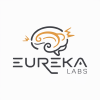
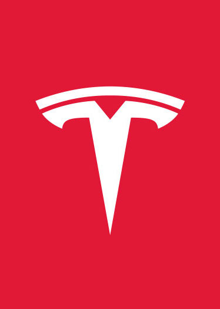

2024 — Present

Eureka Labs
Founder. Building Eureka Labs to modernize education with AI — starting with AI+Human teachers that help students learn anything, from anywhere.

I like to train deep neural nets on large datasets

Founder. Building Eureka Labs to modernize education with AI — starting with AI+Human teachers that help students learn anything, from anywhere.
After leaving OpenAI, focused on educational content. The Neural Networks: Zero to Hero series on YouTube grew to become one of the most-watched deep learning courses — covering backprop, transformers, GPT, and tokenization from scratch.

Joined Tesla as the founding member and Director of AI for Autopilot. Led the team building the vision-based FSD stack — dataset curation, neural network training, deployment at scale. Presented Tesla's AI approach at Tesla AI Day 2021.
Founding member of OpenAI. Worked on generative models, reinforcement learning, and contributed to early GPT research. Also returned briefly 2023–2024 to work on post-training and model evaluation.
PhD in Computer Science advised by Fei-Fei Li. Thesis on visual-semantic alignment for images. Created CS231n: Convolutional Neural Networks for Visual Recognition — Stanford's first deep learning course, which became the defining curriculum for an entire generation of practitioners. Lecture notes and videos remain widely used.
Master's in Computer Science. Research in computer vision and machine learning.
Bachelor's in Computer Science and Physics.
A full from-scratch video series building deep learning from the ground up — from micrograd through GPT-2. No shortcuts. Watch backprop derive itself, build a transformer, understand tokenization.
Stanford's first deep learning course, co-taught with Fei-Fei Li and Justin Johnson. Course notes and lecture videos remain among the most-referenced deep learning materials online.

A tiny scalar-valued autograd engine and a neural net library on top of it. ~100 lines, no dependencies. The pedagogical core of Zero to Hero.

Multi-layer RNN/LSTM for character-level language modeling. Accompanied the "Unreasonable Effectiveness of RNNs" post — generated Shakespeare, Linux kernel, and LaTeX papers.

A web interface for browsing, searching, and filtering arXiv papers. Built to cut through the noise for ML researchers. Now at arxiv-sanity-lite.com.

Fully convolutional localization network for dense captioning — simultaneously detects and describes regions in images.

Efficient image captioning with deep visual-semantic alignments. Rewrote in Torch for GPU speed; widely used as a base for vision-language research.

Deep learning in the browser. Train convolutional nets on MNIST, CIFAR-10, and more — entirely client-side. One of the first in-browser DL demos.

Re-purpose Ubuntu/Mac system logs to monitor and visualize your productivity, habits, and attention. Self-quantification for developers.
The simplest, fastest repository for training/finetuning medium-sized GPTs. ~300 lines. Trains GPT-2 on a single A100 in ~4 hours.
Selected. Full list on Google Scholar.
A curated list of sci-fi books I've enjoyed. Undergraduate academic advice.
I was briefly into speedcubing — some old Rubik's cube tutorials. Also a Tumblr on loss functions.
Contact: click the envelope icon above to reveal email. Fair warning — inbox is overwhelmed.